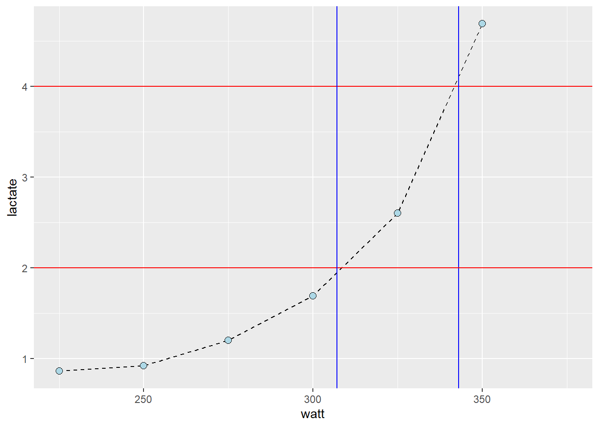

Code
library(tidyverse)
library(exscidata)
data("cyclingstudy")
cyclingstudy %>%
# Select columns needed for analysis
select(subject, group, timepoint, lac.125:lac.375) %>%
# Only one participant and time-point
filter(timepoint == "pre", subject == 10) %>%
# Pivot to long format data using the lactate columns
pivot_longer(names_to = "watt",
values_to = "lactate",
names_prefix = "lac.",
names_transform = list(watt = as.numeric),
cols = lac.225:lac.375) %>%
# Plot the data, group = subject needed to connect the points
ggplot(aes(watt, lactate, group = subject)) +
geom_line(lty = 2) +
geom_point(shape = 21, fill = "lightblue", size = 2.5) +
# Adding straight lines at specific values
geom_hline(yintercept = 4, color = "red") +
geom_vline(xintercept = 343, color = "blue") +
geom_hline(yintercept = 2, color = "red") +
geom_vline(xintercept = 307.1, color = "blue") 